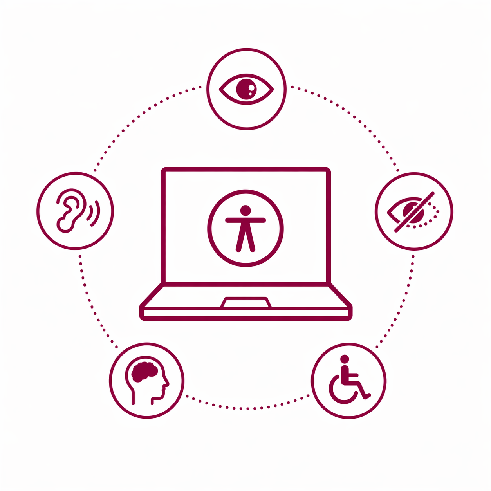

Recursos
Descarga A11yEvalBasic

Edició 2026 · #GAADUdL
Primera Jornada d'Accessibilitat Digital

Jornada per aprendre sobre persones, disseny, desenvolupament web, documents, avaluació i intel·ligència artificial en l'àmbit de l'accessibilitat digital.
Persones
Entén les barreres reals
L'accessibilitat s'aprèn millor quan connectem barreres concretes amb persones, contextos d'ús i tecnologies de suport reals.
Tasques
Què vols fer?
Millorar contingut web
Aplica encapçalaments, enllaços descriptius, alternatives textuals i llenguatge clar.
Crear documents accessibles
Utilitza guies i plantilles per fer documents de Microsoft Word, PDF i presentacions de Microsoft PowerPoint accessibles.
Avaluar accessibilitat
Combina eines automàtiques, revisió manual, prova amb teclat i comprovacions WCAG.
Formació
Vols aprendre accessibilitat digital?
Consulta les microcredencials de la Universitat de Lleida.